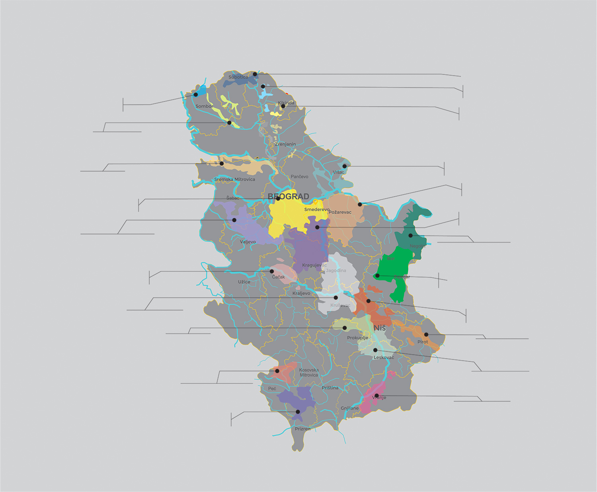

Naslovna
Vesti iz Vinarije
Istorija
Aktuelno
Taste & Learn
VINOPEDIA
Vino & Hrana
Sorte Grozdja
Dogadjaji
Vinski Region
O nama

SUBOTICKI REJON
POTISKI REJON
BANATSKI REJON
JUZNOBANATSKI REJON
MLAVSKI REJON
REJON SUMADIJA
REJON NEGOTINSKA KRAJNA
KNJAZEVACKI REJON
NISKI REJON
NISAVSKI REJON
LESKOVACKI REJON
VRANJSKI REJON
BACKI REJON
REJON TELECKA
SREMSKI REJON
BEOGRADSKI REJON
POCERSKO-VALJEVSKI REJON
CACANSKO-KRALJEVACKI REJON
REJON TRI MORAVE
TOPLICKI REJON
SEVERNOMETOHIJSKI REJON
JUZNOMETOHIJSKI REJON